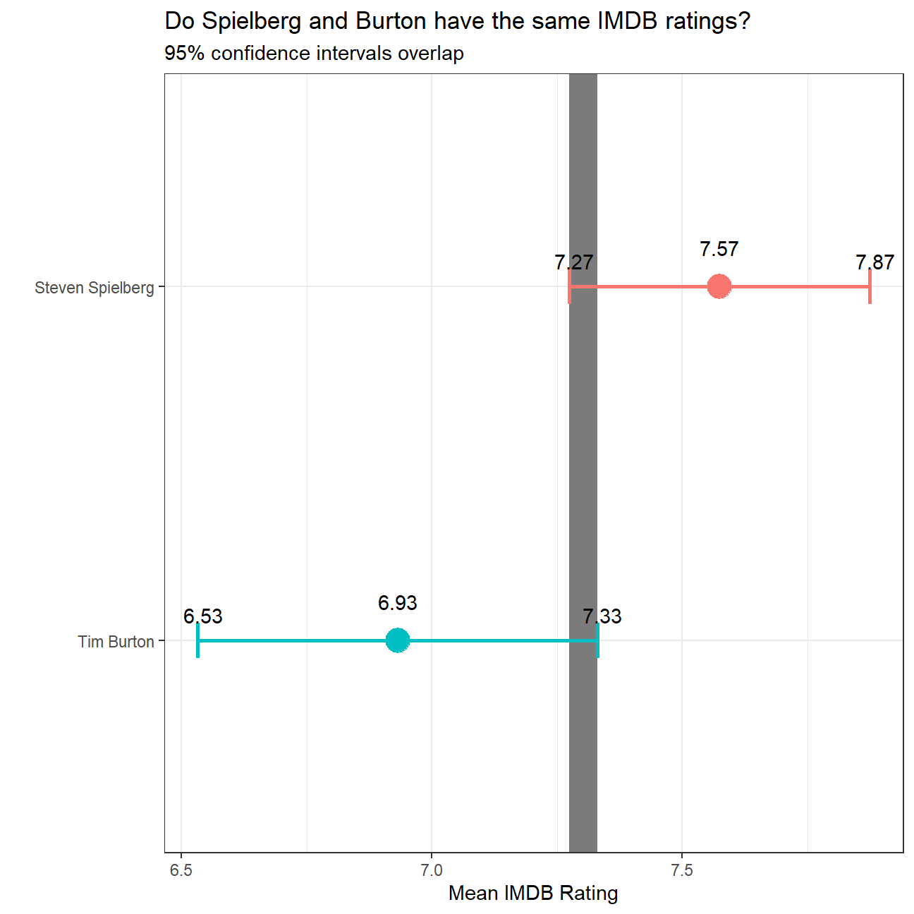
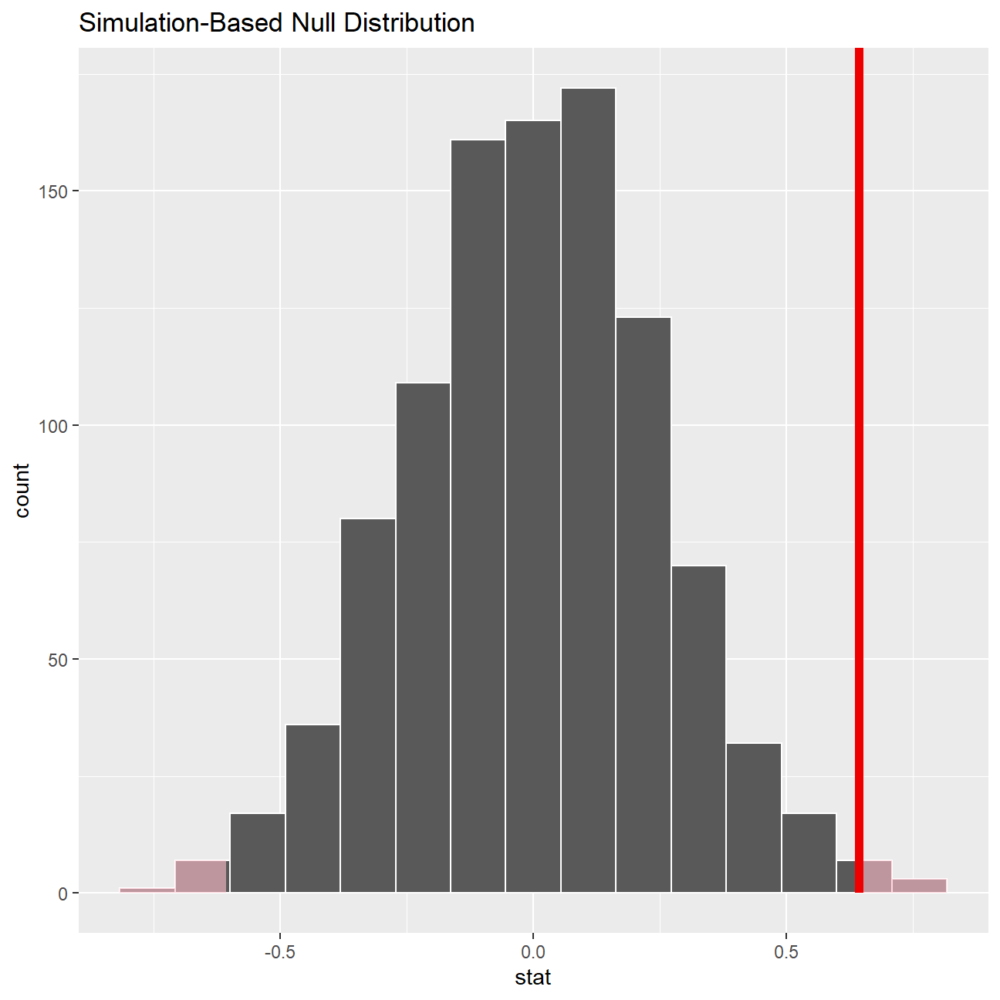

movies <- read_csv(here::here("data", "movies.csv"))
glimpse(movies)## Rows: 2,961
## Columns: 11
## $ title <chr> "Avatar", "Titanic", "Jurassic World", "The Ave...
## $ genre <chr> "Action", "Drama", "Action", "Action", "Action"...
## $ director <chr> "James Cameron", "James Cameron", "Colin Trevor...
## $ year <dbl> 2009, 1997, 2015, 2012, 2008, 1999, 1977, 2015,...
## $ duration <dbl> 178, 194, 124, 173, 152, 136, 125, 141, 164, 93...
## $ gross <dbl> 7.61e+08, 6.59e+08, 6.52e+08, 6.23e+08, 5.33e+0...
## $ budget <dbl> 2.37e+08, 2.00e+08, 1.50e+08, 2.20e+08, 1.85e+0...
## $ cast_facebook_likes <dbl> 4834, 45223, 8458, 87697, 57802, 37723, 13485, ...
## $ votes <dbl> 886204, 793059, 418214, 995415, 1676169, 534658...
## $ reviews <dbl> 3777, 2843, 1934, 2425, 5312, 3917, 1752, 1752,...
## $ rating <dbl> 7.9, 7.7, 7.0, 8.1, 9.0, 6.5, 8.7, 7.5, 8.5, 7....summary_data <- movies %>%
group_by(director) %>%
filter(director %in% c("Steven Spielberg", "Tim Burton")) %>%
summarise(mean = mean(rating, na.rm = TRUE),
sd = sd(rating, na.rm = TRUE),
count= n()) %>%
mutate(se = sd / sqrt(count),
lower_ci = mean - qt(1 - (0.05 / 2), count - 1) * se,
upper_ci = mean + qt(1 - (0.05 / 2), count - 1) * se)
summary_data## # A tibble: 2 x 7
## director mean sd count se lower_ci upper_ci
## <chr> <dbl> <dbl> <int> <dbl> <dbl> <dbl>
## 1 Steven Spielberg 7.57 0.695 23 0.145 7.27 7.87
## 2 Tim Burton 6.93 0.749 16 0.187 6.53 7.33ggplot(summary_data, aes(x=mean, y=reorder(director, mean)))+
geom_point(aes(color = director, size = 3))+
geom_rect(aes(xmin=max(lower_ci), xmax=min(upper_ci), ymin = -Inf, ymax = +Inf ,alpha = .3))+
geom_errorbar(aes(xmin = lower_ci , xmax = upper_ci, width = 0.1, color = director, size = 1.5))+
labs(title = "Do Spielberg and Burton have the same IMDB ratings?", subtitle = "95% confidence intervals overlap", y = "", x = "Mean IMDB Rating")+
theme_bw()+
geom_label(aes(y=reorder(director,mean),x=lower_ci,
label = round(lower_ci,2)),
hjust=0.4, vjust=-0.4, fill = NA, label.size = NA)+
geom_label(aes(y=reorder(director,mean),x=upper_ci,
label = round(upper_ci,2)),
hjust=0.4, vjust=-0.4, fill = NA, label.size = NA)+
theme(legend.position = "none")+
geom_text(aes(label=round(mean,2), vjust =-2)) I have already calculated the confidence intervals for the mean ratings of these two directors and as you can see they overlap.
#NULL hypothesis : Steven Spielberg's mean IMDB rating = Tim Burton's mean IMDB rating
movies <- movies %>%
filter(director %in% c("Steven Spielberg", "Tim Burton")) %>%
mutate(steven_tim_val = ifelse(director == "Steven Spielberg",1,0))
#glimpsing the means of Tim Burton's ratings (mean in group 0) and Steven Spielberg's ratings (mean in group 1)
t.test(rating ~ steven_tim_val, data = movies)##
## Welch Two Sample t-test
##
## data: rating by steven_tim_val
## t = -3, df = 31, p-value = 0.01
## alternative hypothesis: true difference in means is not equal to 0
## 95 percent confidence interval:
## -1.13 -0.16
## sample estimates:
## mean in group 0 mean in group 1
## 6.93 7.57The t-test results show that the mean rating for Tim Burton and Steven Spielberg are different, with Steven’s rating being higher than Tim Burton’s at 7.57 and 6.93 respectively. Although the confidence intervals overlap, we can see that p-value= 0.01 < 0.05 which confirms that the NULL hypothesis can be rejected.
#getting Tim and Steven data only
steven_tim <- movies %>%
group_by(director) %>%
filter(director %in% c("Steven Spielberg", "Tim Burton"))
#assigning numerical values to Steven & Tim
obs_diff <- movies %>%
specify(rating~director) %>%
calculate(stat = "diff in means", order = c("Steven Spielberg", "Tim Burton"))
null_dist <- movies %>%
specify(rating ~ director) %>%
hypothesize(null = "independence") %>%
generate(reps = 1000, type = "permute") %>%
calculate(stat = "diff in means", order = c("Steven Spielberg", "Tim Burton"))
null_dist %>% visualize() +
shade_p_value(obs_stat = obs_diff, direction = "two-sided")
null_dist %>%
get_p_value(obs_stat = obs_diff, direction = "two_sided")## # A tibble: 1 x 1
## p_value
## <dbl>
## 1 0.012Therefore, simulating from a null distribution with an infer package and t-test also show that the p-value is below 5%, indicating we can reject the null hypothesis. Tim Burton and Steven Spielberg are 95% unlikely to have the same mean IMDB rating.